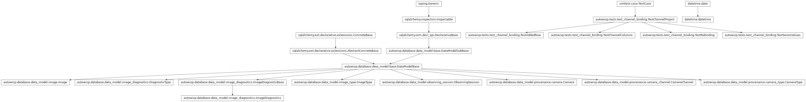
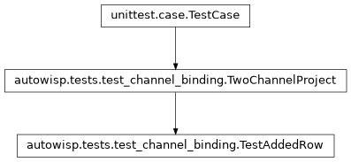
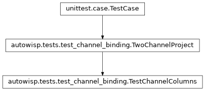
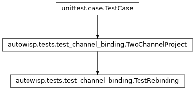
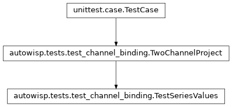
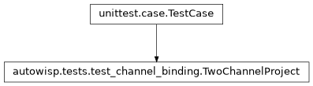

autowisp.tests.test_channel_binding module
Class Inheritance Diagram

Tests for binding a channel to each column of the series table.
Its own module because these need a project recording two channels, and
a session per kind of camera: a colour one with a choice to offer and a
monochrome one without. The fixture in test_diagnostics_views records
a single channel, and giving it a second would change what every
series-table test there sees.
Django is configured here, unlike in the other series-table tests, because what a rebinding answers includes the row’s channel cells as rendered HTML, and rendering them needs the template engine.
- class autowisp.tests.test_channel_binding.TestAddedRow(methodName='runTest')[source]
Bases:
TwoChannelProject
What a press of
+earns: a copy of the row it was pressed in.- test_the_copy_carries_the_pair_and_channels()[source]
The next series usually differs in one thing, so copying leaves only that thing to change.
- test_the_copy_is_drawn_with_the_figure_that_carries_it()[source]
Rather than the table gaining a row the plot catches up with.
- class autowisp.tests.test_channel_binding.TestChannelColumns(methodName='runTest')[source]
Bases:
TwoChannelProject
What each column of a row offers, given what the project records.
- class autowisp.tests.test_channel_binding.TestRebinding(methodName='runTest')[source]
Bases:
TwoChannelProject
What the server answers when a row’s binding changes.
Its own class rather than more of the one above: what a column offers is a question about the project, where this is a question about one edit and what the figure is drawn from afterwards. They share only the fixture.
- rebind(row, *channels, session_id=None)[source]
Return only what a rebinding answers, discarding the rows.
- rebinding(row, *channels, session_id=None, automatic=True)[source]
Return
(rows to draw, fields)for row moved and rebound.The monochrome session unless told otherwise, that being the move which changes what the columns may offer. automatic says what the client reports about the row’s colour and label, which is what decides whether the server replaces them.
- test_a_channel_the_new_pair_lacks_is_dropped()[source]
Bis recorded for the colour session alone.Carrying it over would leave the row naming data that is not there; the column takes the one channel it does offer instead.
- test_a_channel_the_new_pair_offers_is_kept()[source]
The user chose it, and the new session records it too.
- test_a_colour_the_user_chose_survives_the_rebinding()[source]
Theirs, in the figure as well as in the table.
Colouring by quantity rather than by channel is a thing a user may want, and a rebinding must not quietly undo it.
- test_a_label_names_its_quantity_first()[source]
So that a legend entry says which section a series belongs to.
With one section that is redundant, but prefixing always keeps the rule simple – and the label is the user’s to rewrite either way.
- test_a_pair_change_is_answered_with_the_channels_unset()[source]
Which channels a column may offer depends on the pair, so the cells are re-rendered before anything is bound in them.
- test_a_rebinding_carries_the_session_times()[source]
Read-only cells that the client cannot work out for itself.
- test_a_session_recording_one_channel_settles_on_it()[source]
One channel to choose from is no choice at all, so the cell states what it binds and the row is counted at once.
- test_an_automatic_colour_is_corrected_before_drawing()[source]
The whole point of answering before the figure is made.
A row rebound onto another channel is drawn in that channel’s colour, with a legend naming it, in the same round trip that writes them into the table – rather than drawn in the colour of the binding it just left while the table shows the new one.
- class autowisp.tests.test_channel_binding.TestSeriesValues(methodName='runTest')[source]
Bases:
TwoChannelProject
Which of the posted rows are drawn, and what each one reads.
- test_one_quantity_on_both_axes_in_two_channels()[source]
bg_centeragainstbg_center: the plainest colour plot.The two axes name one quantity and differ only in what the row bound each column to. Resolving them by name alone would draw one binding on both axes – a perfect diagonal, and no error anywhere.
- test_the_columns_are_split_between_the_axes()[source]
An axis takes as many channels as the quantity it draws.
jdtakes none, so the row’s one channel belongs to the other axis – and a slice taken from the wrong end would bind it to the time instead and refuse, or worse, silently shift.
- test_which_rows_are_drawn()[source]
Every row is posted, so five of them have to be skipped here.
Two are the user saying not to draw it, and three name no data: a row still to be bound, one from a page whose script predates the channel columns and posts no channels at all, and one from before the session and type were chosen in the row, which names no population to read. The stale two are skipped rather than refused – such a page should draw nothing, not turn the response into an error page. Defaulting
selectedto true keeps a payload stored before the table posted every row still plotting.
- class autowisp.tests.test_channel_binding.TwoChannelProject(methodName='runTest')[source]
Bases:
TestCase
The fixture the classes below share, holding no tests of its own.
Its own project rather than the shared one, which records a single channel: giving that one a second would change what every other series-table test sees. Two sessions, one per kind of camera – a colour one with a choice to offer and a monochrome one without – since the table treats them differently and a project may hold both.
- classmethod _add_camera(db_session, channels)[source]
Describe a camera defining channels, and return its id.
- classmethod _add_session(db_session, label, camera_id, jds)[source]
Add one session of object frames and return its id.
- classmethod _fill_database()[source]
Two sessions: a colour camera’s frames, and a monochrome one’s.
- first_row(x_quantity, y_quantity)[source]
Return the row the table starts with, on the colour session.
Both sessions begin at the same moment in this fixture, so the pairs are ordered by their text and
colour_nightcomes first.
- mono_values = [11.0, 12.0]
The monochrome session’s frames, in its camera’s one channel.
- moved_to(row, session_id, *channels)[source]
Return row as the client posts it after moving it to a session.
- classmethod setUpClass()[source]
Hook method for setting up class fixture before running tests in the class.
- classmethod tearDownClass()[source]
Hook method for deconstructing the class fixture after running all tests in the class.
- values_of = {'B': [2.0, 3.0, 8.0], 'R': [8.0, 6.0, 4.0]}
bg_centerper channel, distinct so that reading the wrong one cannot pass by coincidence.
- autowisp.tests.test_channel_binding._first_jd = 2460000.5
JD of the colour session’s first frame.
- autowisp.tests.test_channel_binding._night_separation = 1.0
The monochrome session is a night later, so the two cannot overlap.